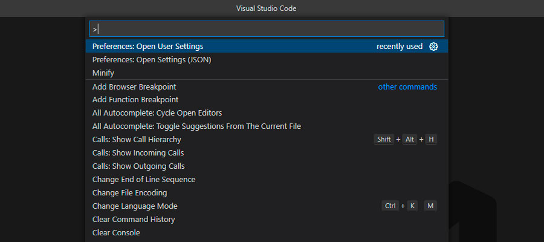
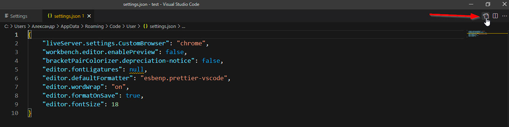

Настраиваем VS Code под себя
Для более комфортной работы над проектами редактор содержит массу
пользовательских настроек от возможности увеличить или уменьшить шрифт
до включения автоматического сохранения файлов. Попасть в панель можно
двумя способами:
- File – Preferences – Settings
-
Ctrl + Shift + p – откроется поисковая
строка где вначале вы увидите Preferences: Open User Settings

Рассмотрим некоторые полезные настройки
-
Auto Save – можно выбрать автоматическое
сохранение, не сохранять автоматически, сохранять при смене или
потере фокуса.
-
Font Size – размер шрифта в пикселях.
- Line Height – высота строки.
-
Console: Font Size – размер шрифта для
терминала.
- Font Family – выбор шрифта.
-
Tab Size – можно задать количество
пробелов в табуляции.
-
Open Files in New Window – позволяет
настраивать создание файлов в новом окне или табе.
-
Word Wrap – управлением тем, как следует
переносить строки – по ширине окна, не переносить и т.д.
-
Format On Paste – определяет, будет ли
редактор автоматически форматировать вставленный код.
-
Minimap – включить или отключить
миникарту.
-
Confirm Delete – убрать или оставить окно
с подтверждением удаления файла.
-
Format On Save – настройка, отвечающая за
автоматическое форматирование кода после сохранения файла. Модуль
форматирования должен быть установлен отдельно, например, «Prettier
- Code formatter».
-
Semi – включить / отключить автоматическое
добавление ; в конце строи – настройка от «Prettier - Code
formatter».
Это далеко не все настройки доступные в VS code и даже пробежаться по
всем вскользь будет не так быстро. Для того, чтобы лучше
ориентироваться во всем этом многообразии, можно воспользоваться левым
меню, которое делит весь список на категории. Настройки чьи дефолтные
значения были изменены можно увидеть в формате JSON кликнув на
соответствующую иконку.
